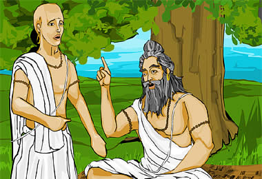

|

When Panini was about twelve years old, it was time for him to learn the sacred language of the Brahmins. At that time, the rules governing the sacred language were only taught to Brahmin children. Those who were not from the Brahmin caste were not taught the rules and could not use the words. Panini was taught the special language by a guru and quickly learned to speak it properly. The special language was taught and learned by recitation. The guru presented a sloka and his pupils would repeat it after him. It was important to learn the correct way to say the sloka, as part of the power of the words came from how they were pronounced.While Panini was learning, he thought a lot about the rules of language. He believed that they were difficult and confusing when they did not need to be. | |
| ...previous | next... |